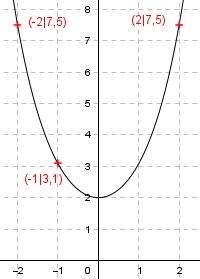

Aufgabe 123 Ergänzen Sie die Wertetabelle für den Graphen: y = ex + e-x x -1 -2 oder 2 y 3,1 7,5 1 y = f(-1) = e-1 + e-(-1) = --- + e e y = 0,4 + 2,7 = 3,1 gerundet f(x) = 7,5 eingesetzt: 7,5 = ex + e-x |-7,5 ex + e-x - 7,5 = 0 |*ex e2x + ex * e-x - 7,5ex = 0 e2x + 1 - 7,5ex = 0 Substitution: ex = z z2 - 7,5z + 1 = 0 p, q Formel: p = -7,5, q = 1 z1,2 = z1,2 = 3,75 ± z1,2 = 3,75 ± z1,2 = 3,75 ± 3,61 Rücksubstituiert : ex = 3,75 ± 3,61 Logarithmiert : ln ex = ln(3,75 ± 3,61) x = ln(3,75 ± 3,61) x1 = ln(3,75 + 3,61) = ln 7,36 = 2 gerundet x2 = ln(3,75 - 3,61) = ln 0,14 = -2 gerundet
